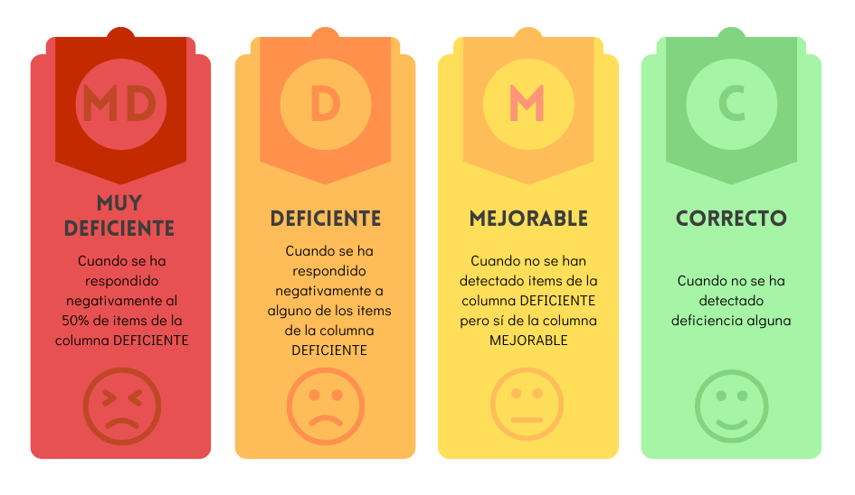

Evaluación de los daños producidos en la salud, realizada por los médicos de empresa.
Evaluación subjetiva de las condiciones de trabajo
La evaluación de las condiciones de trabajo debe apoyarse en la opinión que tienen los propios trabajadores sobre las mismas y la importancia que atribuyen a cada factor de riesgo. Para ello se emplean cuestionarios en los que se revisan los distintos aspectos relacionados con el medio de trabajo..
Evaluación objetiva de las condiciones de trabajo
Además de la opinión de los trabajadores, debe efectuarse una valoración técnica de las condiciones de trabajo realizada por especialistas, que midan y cuantifiquen los distintos factores de riesgo detectados, aplicando las técnicas propias de la higiene industrial (medición de los niveles de ruido, presencia de contaminantes en el aire, grado de humedad, etc.) La información así obtenida, comparada con la valoración subjetiva aportada por los trabajadores expuestos, permitirá un mejor conocimiento de los distintos factores de riesgo existentes en la empresa.
Evaluación de daños a la salud
La información suministrada por trabajadores y técnicos debe completarse con la aportada por los médicos de la empresa, relativa al grado de incidencia de los riesgos detectados sobre la salud de los trabajadores (enfermedades diagnosticadas, accidentes ocurridos, índices de absentismo laboral, etc.).
El método incluye 22 cuestionarios o listas de chequeo, en los que se analizan los factores de riesgo clasificados en cuatro grandes grupos (condiciones de seguridad, condiciones medioambientales, carga de trabajo y organización del trabajo), así como otros para valorar el grado de preparación de la empresa para desarrollar un programa de prevención. Los cuestionarios, que han de ser cumplimentados por los trabajadores y por técnicos especialistas (evaluación subjetiva y objetiva), ayudan a identificar anomalías o carencias preventivas y permiten categorizar el grado de control necesario sobre los factores estudiados.
Los cuestionarios tratan sobre los siguientes temas:
(*) Cuestionarios desfasados debido a la derogación de la legislación en la que se basan.
Fichas
Cada ficha incluye los siguientes apartados:
Introducción: contiene la definición de los conceptos que se han de valorar para cada riesgo y de las repercusiones que sobre la salud pueden tener los mismos.
Criterios preventivos básicos: recoge un esquema de la actuación preventiva que facilita la comprensión del cuestionario y complementa las recomendaciones específicas contenidas en el mismo.
Cuestionario propiamente dicho: cuestiones referentes a medidas preventivas básicas que deberían existir para asegurar un correcto control de los posibles riesgos.
Cuadro de evaluación global: que asigna una doble puntuación (subjetiva y objetiva), en cuatro valores: muy deficiente, deficiente, mejorable y correcta.
Acciones a tomar para corregir las deficiencias detectadas: a rellenar por el técnico en atención al resultado de la evaluación.
Cumplimentación del cuestionario
Cada cuestionario recoge una serie de cuestiones referentes a medidas preventivas básicas que deberían existir para asegurar un correcto control de los posibles riesgos. Los cuestionarios han sido redactados con doble opción de respuesta: la respuesta afirmativa, que se marcaría con una cruz en el recuadro SI, indicaría que la medida preventiva existe. En cambio, la respuesta negativa, que se marcaría en el recuadro NO, indicaría que dicha medida preventiva no existe o, de existir, no tiene un grado de cumplimentación aceptable: se trataría, por tanto, de una deficiencia para corregir.
El recuadro NO se ha rellenado en color amarillo intenso en el caso de deficiencias importantes y en amarillo suave, cuando la deficiencia no es tan grave. Cuando, excepcionalmente, no proceda responder negativamente a una cuestión porque la medida preventiva indicada en el cuestionario no exista, pero se haya dispuesto otra alternativa equivalente que la supla, para evitar dejar la respuesta en blanco debería remarcarse igualmente el recuadro de respuesta afirmativa, aclarando con la indicación N.P. (no procede) al lado.
Todas las cuestiones deben ser contestadas correlativamente y sólo deberán ser saltadas cuando se especifique expresamente en el propio cuestionario.

Elaboración propia. Niveles de deficiencia
Además de la valoración que el propio método asume, se ha creído conveniente, en aras de una mayor flexibilidad, incluir complementariamente el resultado de la evaluación subjetiva del equipo evaluador. Evidentemente, la no coincidencia de los resultados de ambas valoraciones podría ser justificada por situaciones tales como la existencia de medidas de seguridad complementarias que contrarrestan determinadas carencias o cuando la exposición a alguna deficiencia sea muy ocasional.